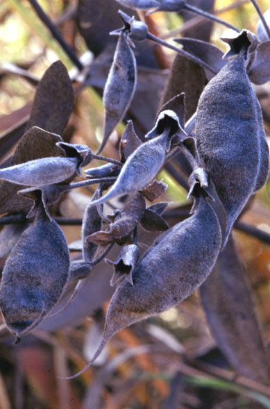
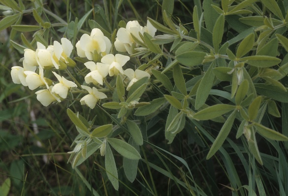

Baptisia Leucophaea
Family: Fabaceae
Cream Wild Indigo
Swink/Wilhelm # 10


 Click to view larger photo
Click to view larger photo

FLOWERING: Early May - Mid-June
SEED TIMING: August - September
HABITAT: Mesic to dry prairies, oak openings
DIAGNOSTIC FEATURES: 1 - 2.5 feet high. Sprawling, almost shrubby looking large plant. Has two to twelve finely pubescent thick stems which are highly branched and widely spread. Leaves are sessile, finely pubescent and have three leaflets. Two large stipules give the appearance of leaflets. The inflorescence consists of a horizontal to drooping raceme of large cream-yellow pea flowers. Blooms earlier than Baptisia leucantha.
TO PICK: Black, pecan-sized, hard-shelled pods are finely pubescent with long pointed beaks. Pick whole pod. Remove seeds from pods to prevent further predation by larve or weevils which are often present inside.